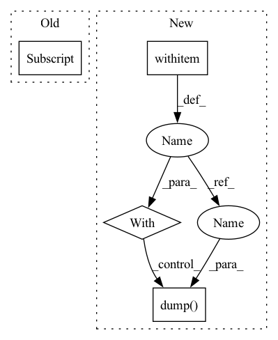

Pattern ID :12385
Before Change
outdict = server.run()
// save results as method{}_mpara{}_r{}_b{}_e{}_lr{}_p{}_seed{}.json file
filename=output_filename(option, server)
with open("task/"+ option["dataset"] + "/record/" + filename, "w") as outfile:
json.dump(outdict, outfile)
if __name__ == "__main__":
After Change
// start federated optimization
output = server.run()
// save results as .json file
with open ("fedtask/"+ option["task"] + "/record/" + flw.output_filename(option, server), "w") as outfile:
ujson.dump( output, outfile )
if __name__ == "__main__":
main()
In pattern: SUPERPATTERN
Frequency: 3
Non-data size: 4
Instances Fragment ID: 42011201
Project Name: wwzzz/easyfl
Commit Name: 96abe773a60b7d62967fbee49a4bcb9fef1ed740
Time: 2021-08-21
Author: zzz510711928@gmail.com
File Name: main.py
M Class Name: AnonimousClass
N Class Name: AnonimousClass
M Method Name: main(0)
N Method Name: main(0)
M Parent Class:
N Parent Class:
M File Name: main.py
N File Name: main.py
M Start Line: 6
M End Line: 16
N Start Line: 6
N End Line: 16
Before Change
//////-----------------------------------------------------------------------.
// DataParallel training option on multiple GPUs
if training_settings["DataParallel_training"] is True:
if torch.cuda.device_count() > 1 and len(training_settings["GPU_devices_ids"] ) > 1:
model = nn.DataParallel(model, device_ids=[i for i in training_settings["GPU_devices_ids"]])
//////-----------------------------------------------------------------------.After Change
device = device)
// Save AR TrainingInfo
with open (os.path.join(exp_dir,"training_info/AR_TrainingInfo.pickle"), "wb") as handle:
pickle.dump( training_info, handle, protocol=pickle.HIGHEST_PROTOCOL)
// // Load AR TrainingInfo
// with open(os.path.join(exp_dir,"training_info/AR_TrainingInfo.pickle"), "rb") as handle:
// training_info = pickle.load(handle) Fragment ID: 42011200
Project Name: deepsphere/deepsphere-weather
Commit Name: 14eabf4f5c77765b5ab05570869c3e150e2150d5
Time: 2021-02-21
Author: wentao.feng@epfl.ch
File Name: train.py
M Class Name: AnonimousClass
N Class Name: AnonimousClass
M Method Name: main(3)
N Method Name: main(3)
M Parent Class:
N Parent Class:
M File Name: train.py
N File Name: train.py
M Start Line: 109
M End Line: 269
N Start Line: 243
N End Line: 359
Before Change
params: PyTree, gcloud_project: Optional[str]=None,
gcloud_token: Optional[Any]=None) -> None:
if model_output_path.startswith("gcs://"):
model_output_path = model_output_path[len("gcs://"):]
// save to tmp_dir
tmp_dir = tempfile.TemporaryDirectory()
model.save_pretrained(
tmp_dir.name, After Change
def save_checkpoint_path(model_output_path: str, params: PyTree,
gcloud_project: Optional[str]=None,
gcloud_token: Optional[Any]=None) -> None:
with open_pp (model_output_path, "wb", gcloud_project=gcloud_project, gcloud_token=gcloud_token) as f:
pkl.dump( params, f)
def delete_checkpoint(checkpoint_path: str, gcloud_project: Optional[str]=None, gcloud_token: Optional[Any]=None) -> None:
if checkpoint_path.startswith("gcs://"):
checkpoint_path = checkpoint_path[len("gcs://"):] Fragment ID: 42011198
Project Name: sea-snell/jaxseq
Commit Name: be37c42a4d4b3401e9e3f09ee4706d1e3720af45
Time: 2022-10-20
Author: sea_snell@icloud.com
File Name: src/seq2seq_train.py
M Class Name: AnonimousClass
N Class Name: AnonimousClass
M Method Name: save_checkpoint_path(4)
N Method Name: save_checkpoint_path(5)
M Parent Class:
N Parent Class:
M File Name: src/seq2seq_train.py
N File Name: src/seq2seq_train.py
M Start Line: 19
M End Line: 39
N Start Line: 23
N End Line: 25